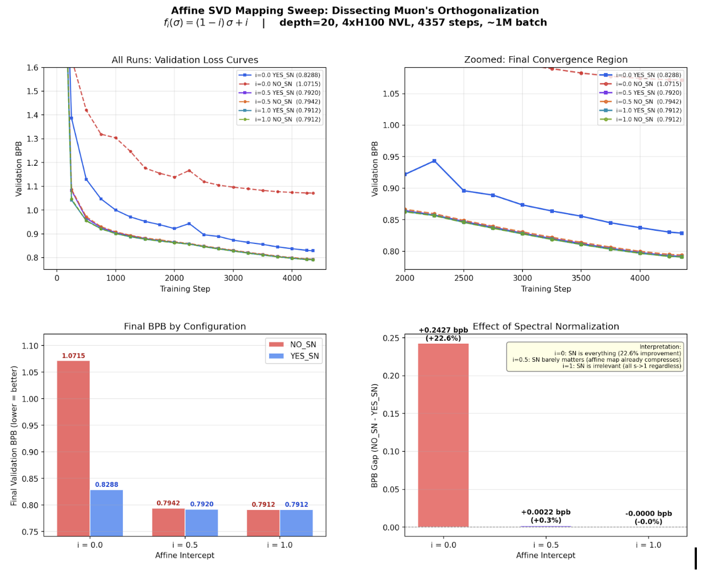
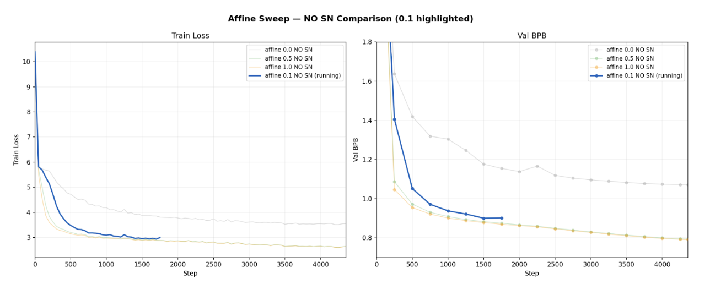
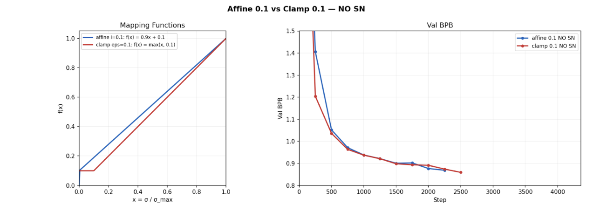
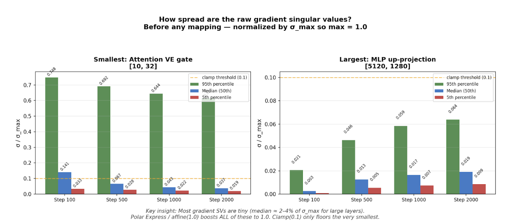

What Really Matters Inside Muon
Over the past year, I've been studying Muon, a spectral optimizer designed for training large NNs. Unlike standard optimizers that operate coordinate-wise, Muon operates at the level of singular values of weight matrices.
This post explains what Muon is actually doing, why it seems to work, and what my experiments suggest about what really matters inside Muon. The surprising takeaway: Muon's strength doesn't come from aggressively reshaping the full spectrum of singular values. Instead, the key mechanism is simply preventing small singular values from being ignored. A simple clamp achieves nearly the same performance as full polar normalization.
What is Muon?
Optimization in deep learning has evolved in stages. SGD updates parameters using the raw gradient:
$$W_{t+1} = W_t - \eta \nabla W_t$$where we use $\nabla W_t$ as shorthand for $\nabla_{W_t} \mathcal{L}(W_t)$, the gradient of the loss with respect to the weight matrix.
SGD treats every coordinate equally. While it is simple and stable, it is sensitive to conditioning — if some parameters have much larger gradients than others, a single learning rate either undershoots the small gradients or overshoots the large ones. To solve this, Adam rescales each coordinate adaptively:
$$m_t = \beta_1 m_{t-1} + (1 - \beta_1) g_t$$ $$v_t = \beta_2 v_{t-1} + (1 - \beta_2) g_t^2$$ $$W_{t+1} = W_t - \eta \frac{m_t}{\sqrt{v_t} + \epsilon}$$The key idea is that dividing by $\sqrt{v_t}$ normalizes each coordinate by its own scale. Parameters with consistently large gradients get divided by a large number, and parameters with small gradients get a relative boost. This makes the effective step size roughly uniform across coordinates, regardless of how different the raw gradient magnitudes are.
Most models use some version of Adam for pretraining. But as models get larger, we need a higher-efficiency optimizer (Muon!). The core insight behind Muon is to extend this same normalizing principle from individual coordinates to the singular values of the gradient matrix. Instead of treating the gradient as a flat vector of independent coordinates, Muon treats it as a matrix and asks: what if we normalize across the spectral structure of the gradient, not just its entries?
How Does Muon Work?
Let $G_t = \nabla W_t \in \mathbb{R}^{m \times n}$ denote the gradient of a weight matrix at step $t$. Muon performs a spectral transformation of the update matrix rather than applying element-wise scaling.
Compute the singular value decomposition: $G_t = U \Sigma V^\top$, where
$$\Sigma = \operatorname{diag}(\sigma_1, \dots, \sigma_r)$$A mapping function $y : \mathbb{R}_{\ge 0} \to \mathbb{R}_{\ge 0}$ is applied to the singular values:
$$\Sigma' = \operatorname{diag}(y(\sigma_1), \dots, y(\sigma_r))$$The transformed update becomes $\Delta W_t = U \Sigma' V^\top$ and the parameter update is $W_{t+1} = W_t - \eta \Delta W_t$
The behavior of Muon is entirely determined by the choice of $y(\sigma)$. In the standard Muon implementation, $y(\sigma) = 1$ for all $\sigma$, meaning every singular value is mapped to the same constant. This corresponds to replacing the gradient with its orthogonal polar factor.
To unpack that: any matrix $G$ can be decomposed as $G = U \Sigma V^\top$ via SVD. The polar factor is the matrix $P = U V^\top$, obtained by setting all singular values to 1. Geometrically, $P$ preserves the "directions" of the gradient (its left and right singular vectors) while discarding all information about the "magnitudes" (the singular values). The result is the closest orthogonal matrix to $G$ in Frobenius norm. So when Muon uses $y(\sigma) = 1$, it is projecting the gradient onto the set of orthonormal matrices — keeping where the gradient points in spectral space, but making every direction equally strong.
This is a much more aggressive form of normalization than Adam. Where Adam equalizes the scale of individual coordinates, Muon equalizes the scale of entire singular value directions. A natural question is whether this aggressive reshaping is actually necessary, or whether something milder and more efficient would suffice.
Newton–Schulz Approximation
Computing full SVDs at each step is expensive. In practice, Muon often uses a Newton–Schulz iteration to approximate the polar factor $U V^\top$ directly, without ever computing individual singular values.
Given a matrix $X_0$, iterate:
$$X_{k+1} = \frac{1}{2} X_k (3I - X_k^\top X_k)$$Under appropriate normalization, this converges quadratically to the orthogonal polar factor $X_\infty = U V^\top$. This enables approximate spectral normalization without explicitly computing singular values — making Muon practical at scale.
Affine Sweep Experiments
I began by running an affine sweep to understand how sensitive Muon is to the intercept parameter for the singular value mapping function in
$$y(\sigma) = (1-c)\sigma + c.$$I evaluated several values of $c$, including $c = 0, 0.05, 0.1, 0.5, 1$, both with and without the spectral normalization (SN) step. I ran the experiment on Karpathy's NanoCHAT. All results were verified by running on Modded NanoGPTand it's Medium GPT model. The behavior observed was unexpected. When $c = 0$, training converges slowly. However, once $c$ exceeds a small threshold (approximately $0.1$), the performance stabilizes. Increasing the intercept beyond this point does not produce meaningful gains. For Muon, c = 1.

The spectral normalization step furthers this reasoning. When SN is enabled, the exact mapping function has minimal impact on overall loss. Identity, any affine, and clamped functions produced almost the same loss. This is because the SN step dominates the spectral geometry, making the mapping function less important.
However, when SN is removed, the mapping becomes critical. The identity mapping, $y(\sigma) = \sigma$, performs significantly worse. However, introducing even a small positive offset,
$$y(\sigma) = (1-0.1)\sigma + 0.1$$restores performance to a level comparable with larger offsets such as $0.5$ or even $1$ (Muon). The threshold behavior seen here is consistent across different models and runs/seeds.

One rebuttal could be that the affine(0.1) mapping both pads small singular values and compresses the spectrum toward 1. To separate these effects, I evaluated a pure clamping function,
$$y(\sigma) = \max(0.1, \sigma),$$which enforces a floor without altering large singular values.
Empirically, clamp(0.1) performs almost identically to affine(1) and Polar-style normalization, which maps all singular values to 1. Since clamp(0.1) does not compress the higher singular values, this proves that the spectral compression is not a major stabilizing mechanism.

These findings raise a natural question: if clamping at 0.1 is enough, how much of the spectrum is actually being affected? To answer this, I plotted the singular value distributions during training under the clamp mapping. The results reveal why clamping works so well - the gradient spectra are so skewed that a floor of 0.1 ends up boosting the most of the singular values anyway.
In large layers, the spectrum is extremely skewed. The median singular value is around 2% of $\sigma_{\max}$, and even the 95th percentile is below the clamp threshold. This shows that most gradient directions carry negligible energy relative to the dominant one. In layers like these, clamp(0.1) basically boosts the entire spectrum.
In smaller layers, the distribution is more spread out, with the 95th percentile around 0.6, but the median remains low, typically between 4% and 7% of $\sigma_{\max}$. Even here, most of the singular values lie close to zero.

Together, these results suggest that the main benefit comes from preventing singular values from becoming too small. Polar normalization and affine(1) force all singular values to be equal, aggressively reshaping the spectrum. In contrast, clamp(0.1) simply places a floor on small singular values without changing the larger ones. Since all of these approaches achieve nearly identical performance, it appears that fully compressing the spectrum is unnecessary. The key factor is avoiding spectral collapse in the weak directions.
If this interpretation is correct, then the essential ingredient of Muon in this setting is not global spectral reshaping, but maintaining non-degenerate gradient directions. This motivates the next step: designing a cheaper mechanism that selectively pads small singular values without performing full spectral normalization.
Acknowledgments
Thanks to my advisor Morris Yao and my PI Jacob Andreas for their guidance and support. I'm also grateful to Lingo Lab for compute resources, and to Andrej Karpathy for the NanoCHAT codebase used in these experiments.